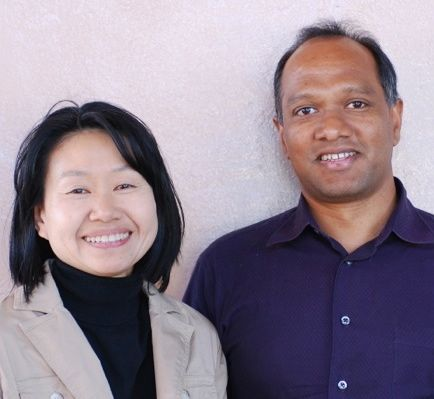

Donate
Donor Profiles: We Give!
Palo Alto Unified is made truly exceptional by the quality of its schools, staff,
and the diverse, talented, and caring community that supports it. Below are
profiles of a few of our donors, a mere sampling of the civic-minded citizens
who come together to support public education by donating to PiE. We invite you
to read about why they give to PiE, and ask you to consider joining the
thousands of parents, businesses, and community members who make supporting PiE
a priority.
For information on how to donate
to PiE or join the Leadership Circle, please
click on the blue links.
Anoop and Rashmi Goyal
"We both work full-time and our family has a very busy life, but supporting PiE financially and through
volunteering is important to us. It’s such a great way to contribute to the community. There are very
few things in life that are more important than our kid’s education."
read more |
back to top
Megan Swezey Fogarty
 "...my kids’ education is fabulous, undoubtedly better than mine. That can be directly attributed to PiE and
the support people give to our schools. When I see the electives, the enrichment, and the counseling, I
am thrilled. It’s become clear that PiE is crucial for sustaining these core activities. My kids are
touched by donations to PiE every day. "
"...my kids’ education is fabulous, undoubtedly better than mine. That can be directly attributed to PiE and
the support people give to our schools. When I see the electives, the enrichment, and the counseling, I
am thrilled. It’s become clear that PiE is crucial for sustaining these core activities. My kids are
touched by donations to PiE every day. "
read more |
back to top
Mike Dreyfus
 "Organizations like Palo Alto’s Partners in Education allow the local schools to maintain a
‘gold standard’ in public education, and have led to increases in local property values despite
the worst real estate market in U.S. history."
"Organizations like Palo Alto’s Partners in Education allow the local schools to maintain a
‘gold standard’ in public education, and have led to increases in local property values despite
the worst real estate market in U.S. history."
read more |
back to top
Stacey Quo
 "
I’m so proud to support PiE as a one of the first Business Partners in Education. Hundreds of my orthodontics
patients have attended Palo Alto schools and while they are getting treatment we talk about finals, homework,
playing music and sports at school. It is so gratifying to know that my practice’s sponsorship of PiE helps fund
electives and quality programs for these remarkable students!"
"
I’m so proud to support PiE as a one of the first Business Partners in Education. Hundreds of my orthodontics
patients have attended Palo Alto schools and while they are getting treatment we talk about finals, homework,
playing music and sports at school. It is so gratifying to know that my practice’s sponsorship of PiE helps fund
electives and quality programs for these remarkable students!"
read more |
back to top
Hideko Sakamoto and Vijay Tella
"I think it’s important that everyone support PiE because
the programs that PiE provides have a big positive impact, and if they go away that will have an equally
large negative effect on schools. Plus, there is nothing like the feeling you get from knowing that you are
helping your kids and others. It’s immediate and quite positive."
read more |
back to top
Marcella and Stuart Bernstein
 "PiE augments
an already great district. We know that some important things would be absent if PiE did not exist,
especially given all the budget cutbacks, but with PiE our schools offer everything you would expect and
more."
"PiE augments
an already great district. We know that some important things would be absent if PiE did not exist,
especially given all the budget cutbacks, but with PiE our schools offer everything you would expect and
more."
read more |
back to top
Gary Fazzino
"I think PiE is such a tangible
way for the entire community to help maintain our great public education system.
Especially as the challenges facing school funding grow, and there’s less support
from the state and less flexibility to help locally, PiE is crucial."
read
more |
back to top
Lisa Young Hallenbeck
"PiE provides
such great support in classrooms. It’s a well-run organization and I love the fact that
funds are distributed across the entire district. PiE is communal, supporting all
schools, and I see a lot of value in contributing to the greater good of the school
community."
read more |
back to top
Shilpa and Amit Singhal
"PiE rounds
out an already well-rounded education system. It enriches our kids’ education and that
enrichment is critical for our children. PiE is a great organization that completes
an already great school district."
read more |
back to top
Steve Young
"We have been longtime PiE
supporters because we understand the realities of public schooling especially under
budget crunches, and we are not willing to stand on the sidelines. We’ve got to be
fiscally and emotionally and physically involved in making sure the education of our
children is primary. It’s part of it all. You have to work to make it a superior
educational experience.”"
read more |
back to top
Clint Smith and Elizabeth Arndorfer
"I'm...inspired by all the
PiE contributors from the community who have no
children in our schools: the educators, realtors, grandparents and others in
the community who support PiE because they want our children to have a
richer educational experience. PiE is fortunate to enjoy such a broad base
of support.
"
read more |
back to top
Tania Nanevicz
"PiE offers an
efficient way for all children in the PAUSD to get increased funding for science, math and art enrichment,
plus more valuable aide time in the classroom"
read
more |
back to top
Palo Alto schools families making a difference. You can too! - please donate today!